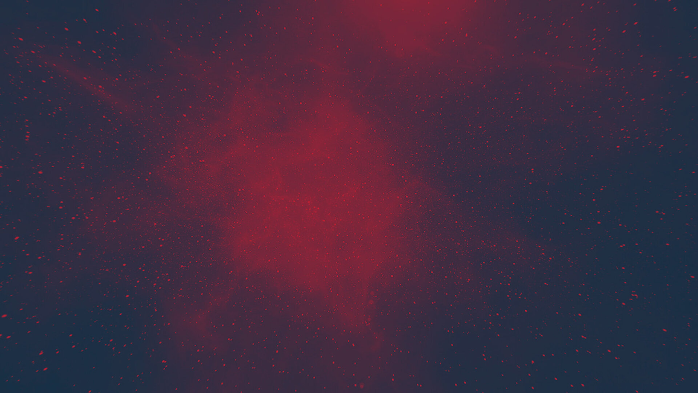

Science & Exploration
Venus Express

Latest
All
Stories
Videos
Images
Story
Science & Exploration
Tracking a solar eruption through the Solar System
15/08/2017
16088
views
182
likes
Read
Story
Science & Exploration
Venus has potential – but not for water
20/06/2016
14066
views
113
likes
Read
Image
Science & Exploration
Destination: Venus
09/11/2015
15269
views
135
likes
View
Story
Science & Exploration
Hot lava flows discovered on Venus
18/06/2015
57081
views
136
likes
Read
Story
Science & Exploration
Venus Express goes gently into the night
16/12/2014
36759
views
180
likes
Read
Story
Science & Exploration
Venus Express: up above the clouds so high
28/07/2014
14869
views
85
likes
Read
Image
Science & Exploration
Venus Express aerobraking
16/05/2014
9122
views
48
likes
View
Image
Enabling & Support
Venus Express aerobraking
16/05/2014
3833
views
29
likes
View
Image
Science & Exploration
Venus cloud tops
08/10/2012
7108
views
14
likes
View
Image
Science & Exploration
Venus in the ultraviolet and the infrared
04/12/2008
1604
views
2
likes
View
More items
More
Europe goes to Venus
Tribute to the cryptic planet
Penetrating an impenetrable world
Past missions to Venus
About Venus Express
Venus Express overview
Venus Express science highlights
The spacecraft
Orbiter instruments
The launcher
Operating Venus Express
About Venus
Venusian geography
The surface
Acid clouds and lightning
Greenhouse effect, clouds and winds
Venus compared to Earth
Meet the team
International collaboration
Project Manager: An interview with Don McCoy
Project Scientist: An interview with Håkan Svedhem
Launch Campaign Manager: An interview with Michael Witting
Spacecraft Operations Manager: An interview with Andrea Accomazzo
Venus Express Flight Control Team
Principal Investigators
Multimedia
Venus Express images
Venus Express videos
Follow us
ESA Sci on Twitter
FAQ
Recommended
Focus on
Science & Exploration
Venus Express overview
Open
Story
Science & Exploration
Venus Express science highlights
15363
views
18
likes
Read
Focus on
Venus Express operations
Open
Focus on
Science & Exploration
Venus Express in-depth
Open
European Space Agency


 ESA Sci on Twitter
ESA Sci on Twitter